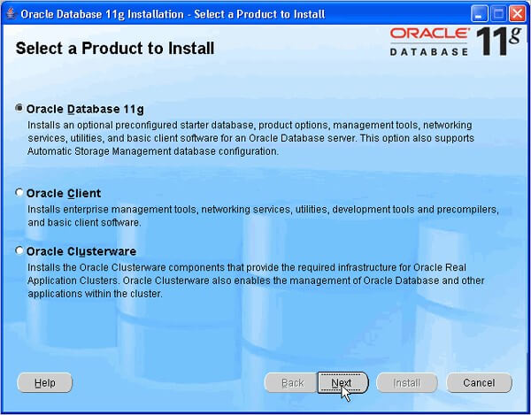
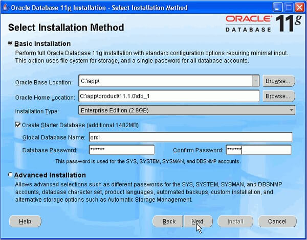
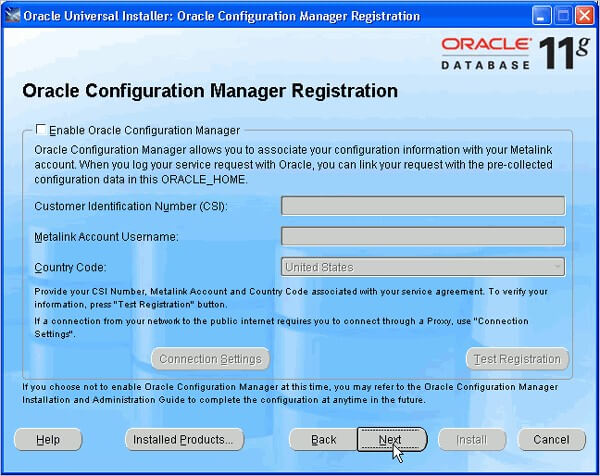
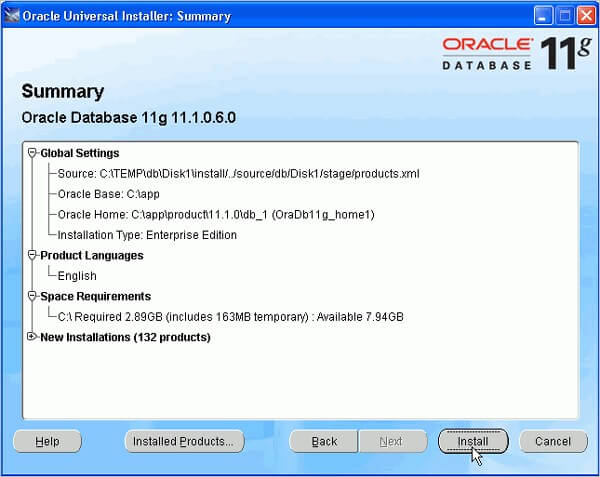
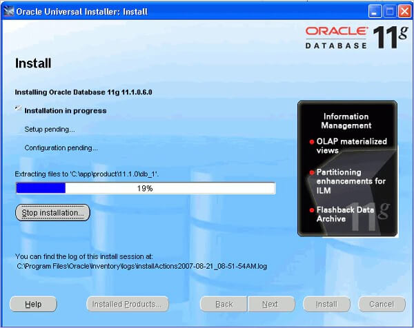
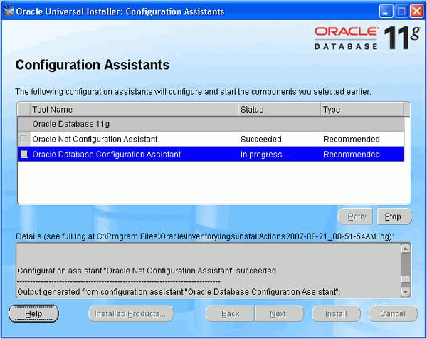
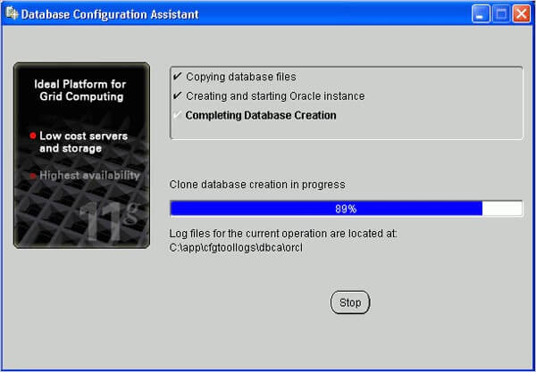
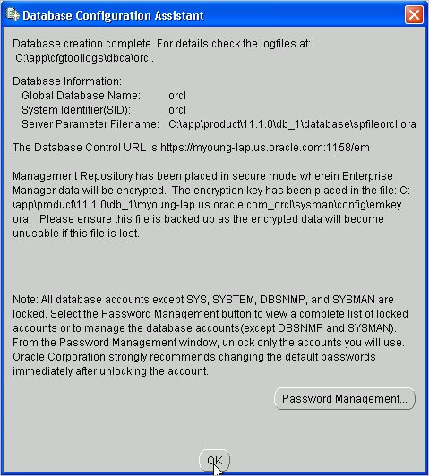
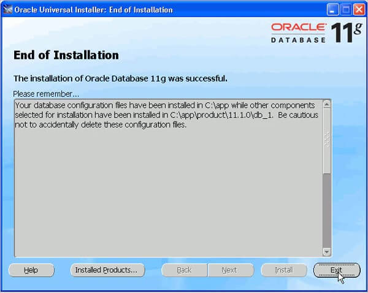

How To Install Oracle Database 11g On Windows
To install the Oracle software, you must use the Oracle Universal installer.
1. For this installation, you need either the DVDs or a downloaded version of the DVDs. In this tutorial, you install from the downloaded version. From the directory where the DVD files were unzipped, open Windows Explorer and double-click on setup.exe from the \db\Disk1 directory.
2. The product you want to install is Oracle Database 11g. Make sure the product is selected and click Next.

3. You will perform a basic installation with a starter database. Enter orcl for the Global Database Name and oracle for Database Password and Confirm Password. Then, click Next.

4. Oracle Configuration Manager allows you to associate your configuration information with your Metalink account. You can choose to enable it on this window. Then, click Next.

5. Review the Summary window to verify what is to be installed. Then, click Install.

6. The progress window appears.

7. The Configuration Assistants window appears.

8. Your database is now being created.

9. When the database has been created, you can unlock the users you want to use. Click OK.

10. Click Exit. Click Yes to confirm exit.

All Done